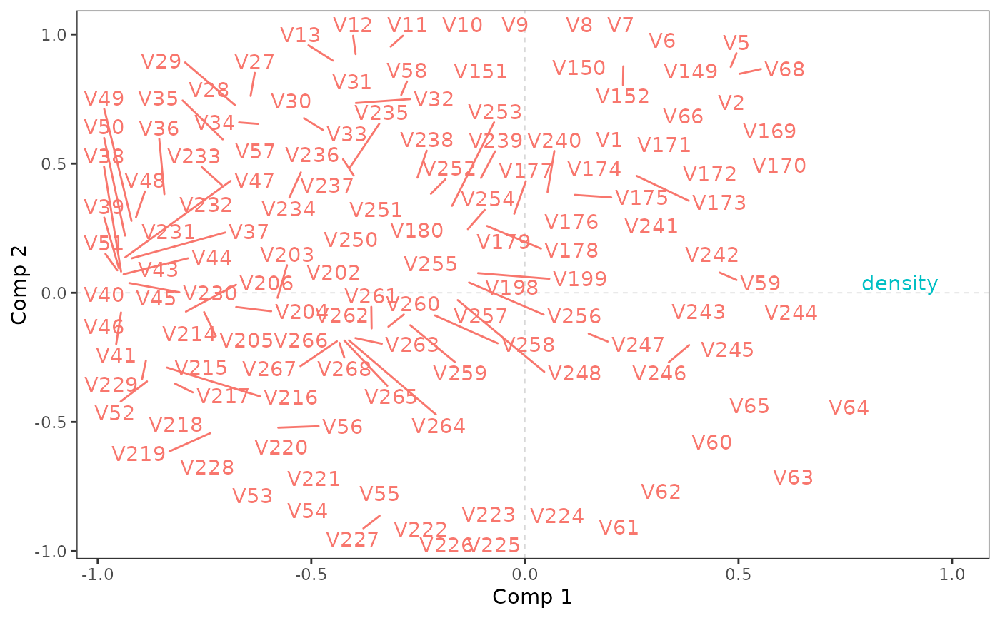

plo_cor.RdPlots the correlations between (X and Y) variables and the components (X scores) of a PLS regression.
plo_cor(object, comps = 1:2, which = "both", min.cor = NULL,
lim = NULL, circles = NULL, col = NULL, size = 3.88)an object of class mvr from pls package
the components to use. Default is c(1,2).
character string. If "both" (default), X and Y variables are plotted. If "X", only X variables are plotted. If "Y", only Y variables are plotted.
numerical value. The minimal correlation with one or the other component for a variable to be plotted. If NULL (default), all the variables are plotted.
numerical value. The limit of the scale (in absolute value). If NULL (default), the limits are automatically determined from the range of tha data.
vector of numeric values. Circles are added to the plot at radiuses specified in circles. If NULL (default), no circle is plotted.
colors for the names of the variables. Only one value should be provided if which is "X" or "Y", a vector of two if which is "both". If NULL (default), colors are set automatically.
numerical value. The size of the names of the variables.
a ggplot2 object
This is what Tenenhaus calls the univariate interpretation of the PLS components, as opposed to the multivariate interpretation (see plo_var).
Martens, H., Næs, T. (1989) Multivariate calibration. Chichester: Wiley.
Tenenhaus, M. (1998) La Regression PLS. Theorie et Pratique. Editions TECHNIP, Paris.
library(pls)
data(yarn)
pls <- mvr(density ~ NIR,
ncomp = 5,
data = yarn,
validation = "CV",
method = "oscorespls")
plo_cor(pls)
#> Warning: ggrepel: 128 unlabeled data points (too many overlaps). Consider increasing max.overlaps

# plot with circles corresponding to
# correlations of 0.5 and 1
plo_cor(pls, lim = 1, circles = c(0.5, 1), col = c("pink", "purple"))
#> Error in plo_cor(pls, lim = 1, circles = c(0.5, 1), col = c("pink", "purple")): ggforce package should be installed to add circles to this plot